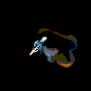
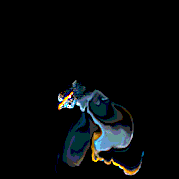

Sprut (c) 2012-2014 Theodor Groeneboom - www.euqahuba.com (theo@euqahuba.com)
About Sprut 1.0
“sprut” [sprut] (norwegian); splash, squirt, jet
Sprut is a simple set of free tools for 2d fluid simulation work within The Foundry’s Nuke. Based on and around Jos Stam’s 1999 Siggraph paper “Stable Fluids”, it was created using standard Nuke 2D nodes only, a fact that makes it the first truly open, flexible and portable fluid toolkit within Nuke. At this point, the tool set comprises of three nodes: SprutEmitter, SprutSolver and SprutInspect - all described and explained further down below.
Figure 1: A simple Sprut setup in Nuke 8.
Acknowledgment
Thanks to Andre Hitsøy, Lucien Fostier & Michael Ralla for contributions.
About SprutEmitter
As the name suggests, the SprutEmitter is the source node for a fluid.
The way it is set up, it gives you initial control over fluid emission, as the sourcing and creation of fluids is often more important than the actual solve itself. It contains a set of functions to create densities (RGBA) and velocities (motion) in the value ranges SprutSolver expects. It has option for animating the source position with a standard transform; this, in turn, creates the appropriate motion vectors for the movement of the fluid.
There are also options for adding various other velocities fields; like constant direction, random direction and turbulence.
Emitter settings :
Figure 2: Emitter velocities - (1) Inherit motion from translation. (2) Turbulence velocities only. (3) Random directional force.
Figure 3: Emitter velocities - Constant direction will add a single direction to the emission of the fluid.
About SprutSolver
SprutSolver is the heart of the entire fluid simulation operation, it is where the projection and movement of the fluid is computed through a set of nodes.
However, most of the time will be spent on working with the emission and adjusting parameters in SprutEmitter, instead of the solver, as the solver only allows for adjustments to the overall simulation.
Note:
As the basic principle of stable fluids is based on creating and maintaining a feedback-loop within the system, Sprut writes out a sequence of images that are, in return, read in and overwritten over and over again. Hence, it is necessary to specify a target folder for the fluid to be cached in and also set the frame ranges manually. For this reason, full read and write permissions to that folder are required - also, using any facility managed write nodes instead of Nuke’s standard usually creates problems.
SprutSolver also offers additional control to adjust the dissipation, diffusion of both densities and velocities during the simulation, as well as it provides post-simulation controls for adding motion-blur.
Solver setting examples:
Viscoscity - Adds a dragging and thickness to the motion of the fluid. At 0px, 5px and 16px.
Figure 4: Dissipation - Causes the fluid density or motion to rapidly decrease on each frame.

Figure 5: Diffusion - Causes the densities or motion vectors to be diffused / blurred on each time step.

Figure 6: Directional Force - Adds a constant directional force to the overall simulation.
About SprutInspect
SprutInspect is a diagnostics tool to visually analyze and evaluate direction and amplitude of motion vectors.
Connected downstream from a SprutSolver node, it displays a grid pattern that is directly related to the fluid simulation and can be used to clearly identify problems and issues and debug existing solves.
Figure 7: SprutInspect diagnostic image
Tips&Tricks
License
Sprut is distributed under GNU/GPL. It may be used for commercial purposes, but not redistributed or repackaged, in particular not for any fee.